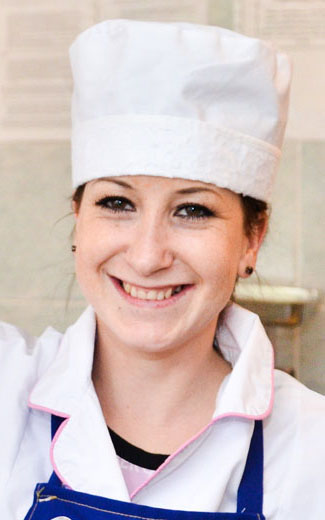
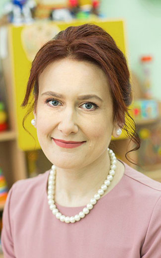
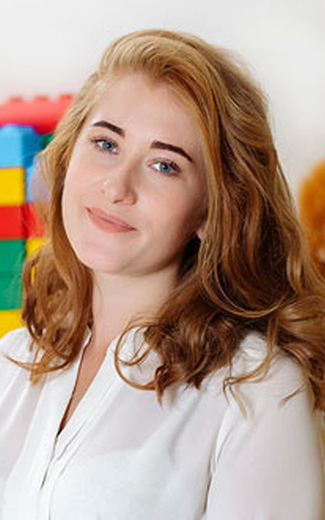
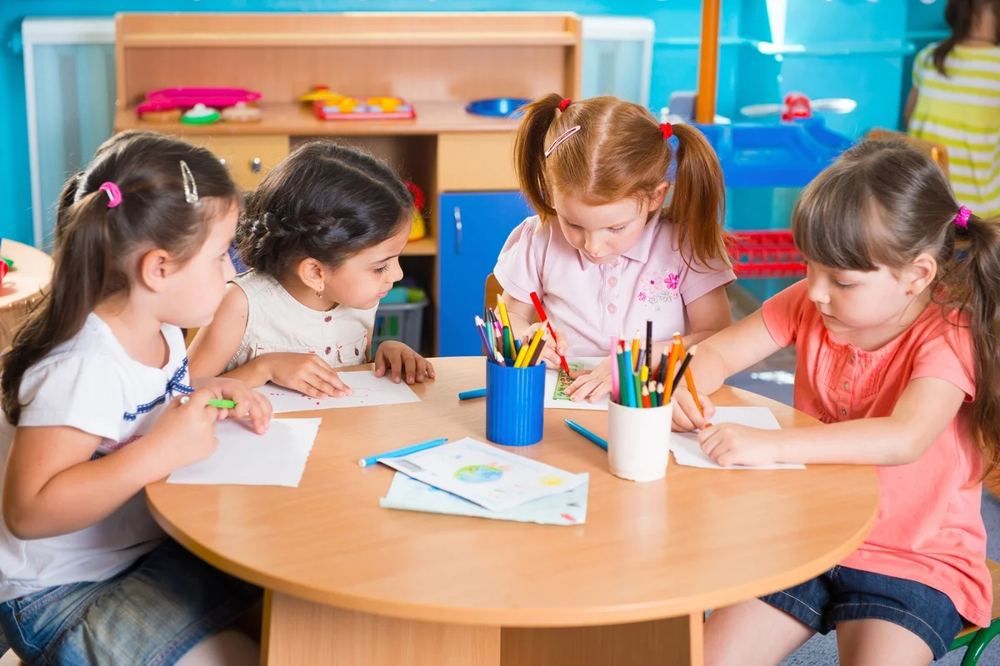
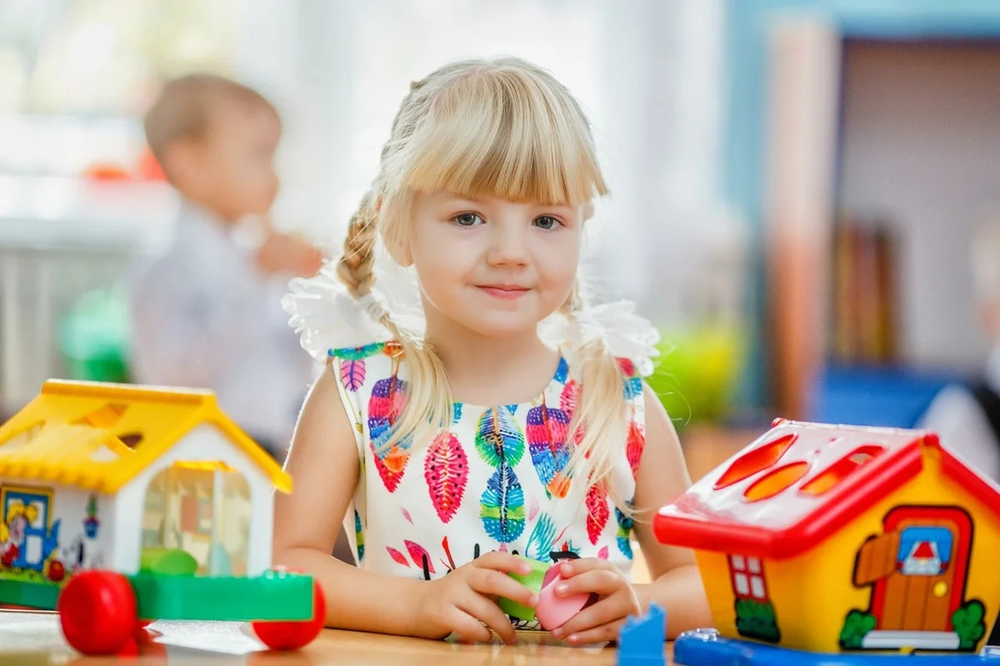
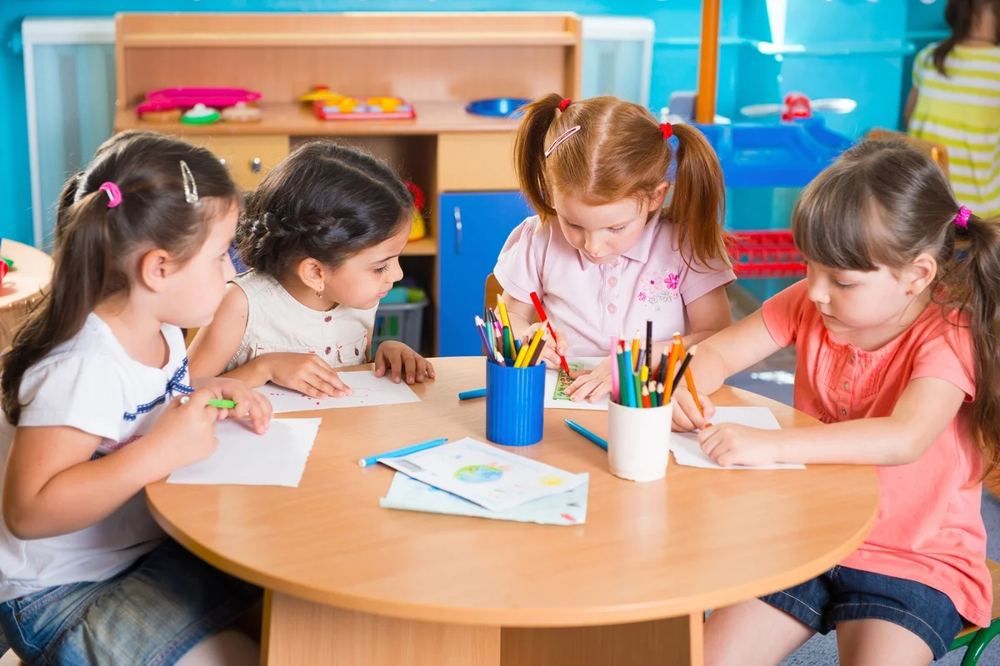
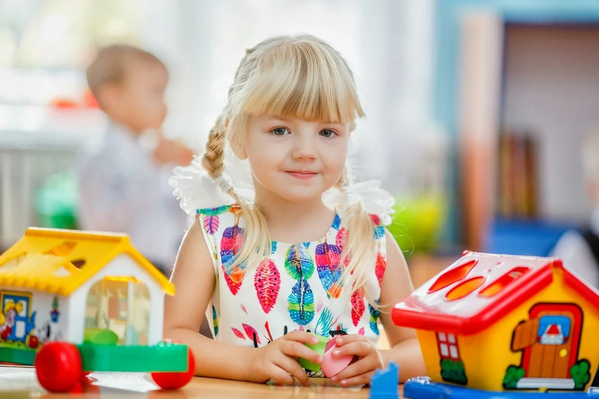

О нас
Человеку очень важно состояться сначала как ребенку, чтобы не задержаться где-то на границе детства и взрослости. Поэтому для нас важно дать ребенку возможность проживать счастливое детство здесь и сейчас!
Руководители
Рябова Василиса Сергеевна
Директор
Чернова Ольга Андреевна
Заместитель директора
Персонал

Морозова Вера
Главный повар
Громова Алина
Медсестра
Акимова Зоя
Педагог-психолог

Щубина Полина
Учитель-логопед

Рыжова Ника
Воспитатель
Крючкова Ева
Воспитатель
Уткина Диана
Воспитатель
Грачева Ася
Воспитатель
| 7.00 - 8.00 | Приём детей, утренняя гимнастика |
| 8.00 - 8.20 | Подготовка к завтраку |
| 8.20 - 8.40 | Завтрак |
| 8.40 - 8.50 | Самостоятельная деятельность, подготовка к занятию |
| 9.00 - 9.25 | Организованная Образовательная Деятельность |
| 9.50 - 11.50 | Подготовка к прогулке, прогулка (игры, наблюдения, труд) |
| 11.50 - 12.00 | Возвращение с прогулки, подготовка к обеду |
| 12.00 - 12.30 | Обед |
| 12.40 - 15.00 | Дневной сон |
| 15.00 - 15.15 | Полдник |
| 15.25 - 15.50 | Организованная Образовательная Деятельность |
| 15.50 - 16.30 | Самостоятельная деятельность, игры, чтение |
| 16.30 - 16.35 | Подготовка к ужину |
| 16.35 - 16.50 | Ужин |
| 17.00 - 18.00 | Игры, прогулка |
Меню на день
 


